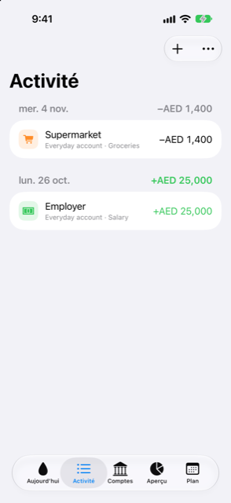

Guide › Enregistrer l’argent
La liste Activité
Tout ce qui s'est passé, filtres, recherche, annuler, dupliquer, répartir.
Activité liste chaque transaction que Damla a enregistrée, groupée par jour, le plus récent en premier. C'est là que vous vérifiez ce qui s'est passé, retrouvez un paiement, et modifiez, supprimez, dupliquez ou répartissez une entrée.

Quand l'utiliser
- Pour voir ce qui est entré et sorti un jour donné, et le total de la journée.
- Pour rattraper ce que les alertes bancaires automatiques ont ajouté depuis votre dernier passage.
- Pour retrouver un paiement par son nom, sa note ou son compte.
- Pour corriger, retirer, répéter ou répartir une transaction après son enregistrement.
Pas à pas
- Ouvrez l'onglet Activité. La liste montre chaque jour que Damla connaît, le plus récent en premier.
- Pour ajouter quelque chose, touchez le menu Ajouter (le bouton plus) et choisissez Saisir une phrase ou Remplir un formulaire.
- Pour restreindre la liste, touchez Filtrer. Dans la partie Afficher, choisissez une seule sorte : Tout, Depuis les alertes, Dépenses, Revenus, Transferts, Ajustements ou Soldes de départ. Dans le même menu, sous Compte, choisissez un compte ou Tous les comptes.
- Pour trouver quelque chose, tapez dans le champ de recherche au-dessus de la liste. Ce que vous tapez est comparé aux bénéficiaires, aux notes et aux noms de comptes.
- Touchez une transaction pour la modifier. Une entrée normale s'ouvre dans le formulaire ; une entrée répartie sur plusieurs catégories ouvre la feuille de répartition.
- Balayez une transaction vers la gauche et touchez Supprimer pour la retirer.
- Sur une ligne de la liste du jour, balayez vers la droite (depuis le bord gauche) pour voir les autres actions : Dupliquer (pour une dépense ou un revenu), Convertir en échéances (pour les achats par carte) et Répartir. Vous pouvez aussi appuyer longuement sur une dépense ou un revenu pour son action Dupliquer.
- Pour retrouver la liste complète, ajustez le Filtre ou videz le champ de recherche.
Bon à savoir
- Le chiffre à droite de chaque titre de jour est le total du jour : l'argent entré moins l'argent sorti. Les mouvements entre vos propres comptes et les paiements de carte n'y sont pas comptés, et un jour ne contenant que cela n'affiche aucun total.
- L'argent sortant est marqué d'un moins, l'argent entrant d'un plus en vert. Les mouvements entre vos propres comptes et les ajustements sont en gris. Un achat dans une autre devise qui reste une estimation affiche son montant avec un signe
≈jusqu'à ce que le relevé le confirme. - Les soldes de départ ne sont pas des événements, donc ils restent hors de la liste simple. Pour les voir, utilisez Filtre > Soldes de départ, ou la recherche.
- Dupliquer ouvre un nouveau formulaire avec le même montant, le même compte, la même catégorie et le même bénéficiaire, daté d'aujourd'hui. Rien n'est enregistré tant que vous ne touchez pas Enregistrer dans ce formulaire. Les mouvements entre comptes, les paiements de carte et les transactions réparties ne peuvent pas être dupliqués.
- Répartir sert à un paiement qui couvre plusieurs catégories, par exemple des courses de supermarché qui comprenaient des provisions et une chose pour l'école. Choisissez une catégorie et un montant pour chaque part jusqu'à ce qu'il ne reste rien à partager. Le paiement lui-même ne change pas ; une transaction déjà répartie ouvre la même feuille quand vous la touchez.
- Convertir en échéances n'apparaît que pour un achat par carte qui n'est pas déjà sur un plan d'échéances. Il ouvre le formulaire d'échéances, où vous tapez les chiffres que votre banque indique — l'échéance mensuelle, le nombre de mois, les frais éventuels et la première date — puis vous touchez Convertir. Rien ne change tant que vous ne le faites pas.
En rapport
Quelque chose n’est pas clair ou manque ? Écrivez à support@raveniq.ai en indiquant la page.